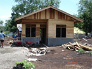

|
terre des hommes Murgtal/Mittelbaden: mehr als 48.000 € für Tsunami-Opfer gesammelt |
Die regionale Arbeitsgruppe der Kinderhilfsorganisation terre des hommes konnte von Dezember 2004 bis Dezember 2005 mehr als 48.000 € für die Opfer der Flutelle in Südasien zusammentragen. „Wir sind sehr angetan von der vielfältigen Hilfsbereitschaft aus der Region, von jungen und älteren Mitbürgern. Viele Tropfen der Hilfe bewirken, dass einer großen Zahl in Not geratener Mitmenschen im fernen Teil unserer Erde nachhaltig geholfen werden kann“, so Heinz Wolf, der die überörtliche Spendenaktion organisierte.
Damit war es möglich 1.100 Kindern Hilfe zukommen zu lassen, das entspricht in etwa der gesamten Kinderzahl von Kuppenheim und Oberndorf. Mit dem im mittelbadischen Raum eingesammelten Betrag konnten die Projektpartner vor Ort 13 Wohnhäuser bauen, 5 Fischerboote reparieren und für 130 Kinder Schulplätze schaffen und diesen wieder eine Zukunft geben.
Die stattliche Summe von 48.000 € stammt von 420 Spendern, zu einem großen Teil aus Kuppenheim, dem Sitz der Arbeitsgruppe. Gespendet wurden Beträge von 2 bis 500 €, von Institutionen, Geschäftsleuten, Kollegien und Privatpersonen, auch von Schülern.
Noch größere Spenden kamen von: Volksbank Baden-Baden/Rastatt (5.000 €), Riva Rastatt (2.810 €), GroKaGe Gaggenau (1.110 €), Narrenzunft Knöpfle Kuppenheim (1.000 €), SV 08 Kuppenheim Jugend (1.000 €), Grundschule Hörden (800 €), AC Schlecksl Kuppenheim (600 €), SG Stern Baden-Baden (489 €).
Die Bundesgeschäftsstelle von terre des hommes nahm insgesamt 12,6 Millionen € Spenden ein. Zwei Drittel davon wurden bereits für Notfallmaßnahmen und den aktuellen Wiederaufbau eingesetzt. Der Rest wird für die langfristige Hilfe in den kommenden Jahren verwendet.
Den größten Teil der Hilfe bekamen Partner in Südindien, wo bisher Häuser für mehr als 7.000 Einwohner gebaut und rund 1.000 Fischerboote repariert werden konnten. Für 18.000 Schülerinnen und Schüler schuf terre des hommes Unterrichtsräume. In Aceh auf der Halbinsel Sumatra wurden Wohnhäuser für 4.000 Tsunami-Opfer geschaffen sowie Tausenden von traumatisierten Kindern psychosoziale Hilfe geleistet. Daneben bekamen die Fischergemeinden konkrete Hilfen, um ihnen eine langfristige Perspektive zu sichern. |
Fair gehandelte Blumen schenken - Frauen und Kinder vor Ausbeutung schützen |
Zum Valentinstag erinnert das entwicklungspolitische Kinderhilfswerk terre des hommes daran, dass auf vielen Blumenfarmen ausbeuterische Arbeitsbedingungen herrschen. Betroffen seien insbesondere Frauen, die in den Lieferländern in Afrika und Lateinamerika für Hungerlöhne arbeiten und dabei oft ungeschützt giftigen Pestiziden ausgesetzt sind.
»Wir rufen deshalb Verbraucher in Deutschland dazu auf, zum Valentinstag auch diesen Blumenarbeiterinnen und ihren Kindern eine Freude zu machen und gezielt Blumen aus fairem Handel zu kaufen«, erklärte Wolf-Christian Ramm, Pressesprecher von terre des hommes. Blumen mit dem »Flower Label« oder dem TransFair-Siegel stammen aus menschenwürdiger und umweltgerechter Produktion. Rund 1.000 Blumengeschäfte in Deutschland verkaufen Ware mit dem Flower Label, von den Handelsketten Kaiser´s Tengelmann und EDEKA Südwest werden Rosen mit dem TransFair-Siegel angeboten.
Die fair gehandelten Blumen stammen von Blumenfarmen aus Ecuador, Kenia, Tansania, Simbabwe, Südafrika und Portugal, die sich verpflichtet haben, Existenz sichernde Löhne zu zahlen, Gewerkschaftsfreiheit zuzusagen und Sozialleistungen zu gewähren. Vorgeschrieben ist außerdem der Schutz der Arbeiterinnen vor Pestiziden, sowie schonender Umgang mit Wasser und Abfällen. Die unabhängigen Kontrolleure der beiden Sozialsiegel prüfen, ob die Farmen diese Sozial- und Umweltstandards tatsächlich umsetzen.
Durch das »Flower Label« und das TransFair-Siegel haben sich Arbeitsbedingungen auf 60 Blumenfarmen mit 15.000 Arbeiterinnen deutlich verbessert. Für weitere rund 135.000 Blumenarbeiterinnen in Afrika und Lateinamerika stehen diese Verbesserungen noch aus.
Weitere Informationen:
|
Kindersoldaten verstärkt bei Rebellen und Paramilitärs |
 Weltweit sind derzeit rund 250.000 Kinder als Soldaten im Einsatz. Sie kämpfen überwiegend in Guerillaverbänden und paramilitärischen Gruppen. Zwar haben in den letzten Jahren 104 Staaten den Einsatz von Kindersoldaten geächtet. Doch nicht-staatliche bewaffnete Gruppen wie Rebelleneinheiten fühlen sich nicht an völkerrechtliche Normen gebunden. Auf das Schicksal der Kindersoldaten macht das Kinderhilfswerk terre des hommes am 12. Februar mit dem Red Hand Day aufmerksam. Weltweit sind derzeit rund 250.000 Kinder als Soldaten im Einsatz. Sie kämpfen überwiegend in Guerillaverbänden und paramilitärischen Gruppen. Zwar haben in den letzten Jahren 104 Staaten den Einsatz von Kindersoldaten geächtet. Doch nicht-staatliche bewaffnete Gruppen wie Rebelleneinheiten fühlen sich nicht an völkerrechtliche Normen gebunden. Auf das Schicksal der Kindersoldaten macht das Kinderhilfswerk terre des hommes am 12. Februar mit dem Red Hand Day aufmerksam.
»Wir haben in den letzten Jahren erreicht, dass viele Regierungen das so genannte Kindersoldatenprotokoll ratifiziert haben und auf die Rekrutierung von Kindern verzichten. Inzwischen ist es jedoch so, dass ein Großteil der Kindersoldaten in Rebellenarmeen oder bei Milizen dient. Deswegen müssen wir künftig verstärkt auf diese nicht-staatlichen Einheiten einwirken, mit den Rekrutierungen aufzuhören«, so Andreas Rister, Vertreter von terre des hommes in der Coalition to Stop the Use of Child Soldiers. »Unser Ziel bleibt nach wie vor: Kein Kind soll mehr in den Kriegen der Erwachsenen kämpfen müssen.«
terre des hommes setzt sich beispielsweise im burmesisch-thailändischen Grenzgebiet für Kindersoldaten ein. Mitarbeiter des terre des hommes-Projektpartners HREIB verhandeln mit den dortigen Rebellenverbänden darüber, Kinder aus ihren Reihen zu entlassen und ihnen stattdessen einen Schulbesuch zu ermöglichen. »Inzwischen wird weltweit begriffen«, erklärt Andreas Rister, »dass Kindersoldaten Opfer eines grausamen Kriegsverbrechens sind.«
Seit kurzem ist die neue Website www.redhandday.org online, auf der künftig Aktionen zum Red Hand Day dokumentiert werden. Ob Schüler oder Schulen, Jugendgruppen oder Nichtregierungsorganisationen: Wer gegen den Missbrauch von Kindern als Soldaten Position beziehen möchte, kann ein Foto seiner Aktion einsenden. Zentrales Motiv ist dabei die »Rote Hand«: Stoppt den Einsatz von Kindern als Soldaten!
Aktionsseite zum Red Hand Day |
Kinder setzen sich für terre des hommes ein
Filmstart der »Wilden Hühner« am 9. Februar |
Sie heißen »Chilli Peppers«, »Lichtblick« oder »GiChiCha« (Give Children A Chance): Die KinderrechtsTeams des Kinderhilfswerks terre des hommes. Mit dem Kinofilm »Die Wilden Hühner«, der in dieser Woche in die Kinos kommt, erhalten sie prominenten Beistand von der Leinwand: Das Mädchen Frieda gehört nicht nur zur Mädchenbande der »Wilden Hühner«, sondern setzt sich auch mit viel Elan für terre des hommes ein - und damit für die Rechte der Kinder.
Tatsächlich engagieren sich etwa 50 KinderrechtsTeams überall in Deutschland für terre des hommes. Sie beschäftigen sich mit dem Lebensalltag ihrer Altersgenossen in Afrika, Asien oder Lateinamerika und sorgen dafür, dass auch im Schulunterricht über Themen wie Kinderarbeit oder Kinderhandel gesprochen wird. Sie organisieren vielfältige Aktionen, bei denen sie über die Arbeit von terre des hommes informieren. Und regelmäßig gibt es Treffen, bei denen sich die Teams miteinander austauschen können.
Einmal im Jahr findet zum Beispiel der terre des hommes-Aktionstag »Straßenkind für einen Tag« statt, an dem sich viele KinderrechtsTeams, aber auch Schulklassen und Vereine beteiligen. Für einen Tag tun die Kinder in vielen Orten in Deutschland und der Schweiz das, was Straßenkinder tagtäglich tun müssen, um zu überleben: Sie waschen Autoscheiben, putzen Schuhe oder verkaufen Kleinigkeiten aus dem Bauchladen. Und sie informieren Passanten darüber, dass die Rechte von Straßenkindern weltweit verletzt werden: Sie erhalten keine Schulbildung, keinen Schutz vor Gewalt, keine Gelegenheit zum Spielen.
»Wir freuen uns, dass das Engagement für Kinderrechte nun auch auf der Leinwand zu sehen ist«, sagt Wolf-Christian Ramm, Pressesprecher von terre des hommes. »Es wäre schön, wenn das dazu beiträgt, dass wir viele neue Mitstreiter für unsere KinderrechtsTeams bekommen!«
Weitere Informationen:
terre des hommes Kinder- und Jugendseiten
|
Patenkind per Katalog:
Studie zur Werbung mit Kinderpatenschaften |
Das Interesse an Kinderpatenschaften ist groß. Wer den Wunsch hat, etwas Gutes zu tun, findet im Internet bei verschiedenen Organisationen die Möglichkeit, die Patenschaft für ein Kind zu übernehmen. Man kann sich festlegen, ob das Patenkind ein Junge oder ein Mädchen sein soll, ob aus Afrika, Asien oder Lateinamerika. Man kann sich Vorschläge machen lassen und ein bestimmtes Kind aussuchen. Die Paten erhalten regelmäßig Post von »ihrem« Patenkind; sogar persönliche Besuche sind möglich.
Diese persönliche Unterstützung ist für viele Spenderinnen und Spender attraktiver als die anonyme, unpersönliche Spende, deren Einsatz und konkrete Wirkung oft schwer nachvollziehbar ist. So ist das Angebot von Patenschaften für viele Hilfsorganisationen ein wichtiges Instrument der Spendenwerbung.
Auch das Kinderhilfswerk terre des hommes hat nach seiner Gründung im Jahr 1967 begonnen, Kinderpatenschaften zu vermitteln. Schon bald gab es aber Diskussionen, ob dieses Instrument mit den Zielen von terre des hommes vereinbar sei. Die Werbung mit einzelnen Kindern, so die damalige Kritik, stehe im Widerspruch zum Anliegen von terre des hommes, nachhaltige Entwicklungsarbeit zu leisten und damit auch politische Veränderungen zu Gunsten der Kinder zu verwirklichen. Die Patenschaft sei Hilfe für einzelne Kinder und nicht geeignet, die Ursachen der Not zu überwinden. Auch die Verwaltungsausgaben, die mit der Vermittlung und Begleitung von Patenschaften verbunden sind, wurden kritisiert.
Im Jahr 1975 fiel bei terre des hommes die Entscheidung, das Patenschaftsprogramm einzustellen. Paten wurden gebeten, nun Projekte zu fördern und damit Gruppen von Menschen zu unterstützen. Damit verzichtet terre des hommes seit nunmehr 30 Jahren auf die Werbung mit Kinderpatenschaften.
»Kinder werden instrumentalisiert«
Die Pädagogik-Professorin Anette Scheunpflug von der Universität Erlangen-Nürnberg hat diese spezielle Form der Spendenwerbung nun in einer Studie untersucht. terre des hommes hat die Studie mitfinanziert. Das Ergebnis, so die Forscherin, sei zwiespältig: So gebe es Organsiationen, denen in der Patenschaftswerbung eine sensible Darstellung gelingt. Es gebe aber auch kritische Punkte: »Einige Materialien vermitteln den Eindruck, dass sich die Spender Wunschkinder auswählen können, die in Werbeprospekten oder im Internet oft mit Foto, Lebenslauf und Hobby ganz ähnlich wie in Katalogen dargestellt werden.« Durch solche Werbeformen würden die Kinder instrumentalisiert, kritisiert Scheunpflug.
Obwohl heute alle Organisationen für sich in Anspruch nehmen, mit ihrer Arbeit Projekte zu fördern und nicht nur einzelnen Kindern zu helfen, werde dies bei der Werbung für Patenschaften nicht immer deutlich. «Einige Organisationen vermitteln ein verkürztes Bild der Entwicklungszusammenarbeit«, meint die Professorin. Bei diese Art der Werbung würden strukturelle Fragen vernächlässigt.
Mit der Förderung der Studie will terre des hommes einen Beitrag zur Diskussion über die Werbung mit Kinderpatenschaften leisten.
Stephan Stolze, terre des hommes |
Sudan: Hilfe für Vertriebene in Darfur |
|
Die bewaffneten Auseinandersetzungen in der sudanesischen Provinz Darfur haben bereits zwischen 180.000 und 300.000 Menschen das Leben gekostet und etwa zwei Millionen aus ihren Heimatdörfern vertrieben. Seit Februar 2003 machen Überfälle arabischer Milizen auf schwarzafrikanische Dörfer, Aufstände oppositioneller Rebellengruppen und militärische Angriffe der sudanesischen Zentralregierung den Menschen in der Region das Leben zur Hölle. Waffenstillstandsverhandlungen haben bisher nicht zum Erfolg geführt, und trotz Stationierung von Eingreiftruppen der Afrikanischen Union (AU) kommt es immer wieder zu schweren Menschenrechtsverletzungen und Verbrechen gegen die Zivilbevölkerung. Seit Mai 2005 hat der malische AU-Kommissar Alpha Oumar Konaré 139 Waffenstillstandsbrüche durch Armee, Rebellen und diverse Milizen gezählt.
Etwa 40 Prozent der vertriebenen Zivilisten sind in die Auffanglager in West Darfur geflohen, viele sammeln sich im Verwaltungsbezirk El Geneina. Hier liegen auch die beiden Flüchtlingslager, in denen unser Projektpartner terre des hommes Lausanne arbeitet und für die wir Sie um Ihre Spende bitten: das Al Riyad Camp, wo etwa 15.000 Menschen leben, und das Ardamata Camp, wo schätzungsweise 27.000 Kinder, Frauen und Männer unterbracht sind.
Das Leben in den Lagern bedeutet für die Vertriebenen eine enorme Belastung. Vielfach krank, ausgehungert und traumatisiert müssen Familien auf engstem Raum in staubigen Verschlägen existieren; eine Extremsituation, in der es zwangsläufig auch zu Konflikten untereinander kommt. Besonders schutzlos sind die Kinder dieser Situation ausgeliefert: Sie haben oft schreckliche Erfahrungen von Gewalt und Verlust, Vertreibung, Hunger und Tod machen müssen.
Weiterlesen auf www.tdh.de: Das Hilfsprogramm, Spenden und weitere Informationen |
Hilfswerkebündnis „Gemeinsam für Menschen in Not – Entwicklung hilft!“ bittet erneut um Spenden für die Erdbebenopfer in Pakistan |
 Wie befürchtet hat sich die Lage der Überlebenden in den pakistanischen Erdbebengebieten weiter verschlechtert. Nach wie vor ist die Versorgung völlig unzureichend. Wegen des schlechten Ernährungszustandes der Menschen, der derzeit außergewöhnlich harten Winterkälte und völlig unzureichender Zeltunterkünfte ist das Leben von Hundertausenden bedroht. Das Erdbeben hatte Anfang Oktober letzten Jahres schätzungsweise mehr als 80.000 Menschenleben gefordert. Viele Dörfer vor allem in den Bergregionen wurden zerstört. Für die damals angelaufenen Hilfsmaßnahmen standen zuwenig finanzielle Mittel bereit, um noch rechtzeitig vor dem herannahenden Winter feste Unterkünfte zu errichten. Wie befürchtet hat sich die Lage der Überlebenden in den pakistanischen Erdbebengebieten weiter verschlechtert. Nach wie vor ist die Versorgung völlig unzureichend. Wegen des schlechten Ernährungszustandes der Menschen, der derzeit außergewöhnlich harten Winterkälte und völlig unzureichender Zeltunterkünfte ist das Leben von Hundertausenden bedroht. Das Erdbeben hatte Anfang Oktober letzten Jahres schätzungsweise mehr als 80.000 Menschenleben gefordert. Viele Dörfer vor allem in den Bergregionen wurden zerstört. Für die damals angelaufenen Hilfsmaßnahmen standen zuwenig finanzielle Mittel bereit, um noch rechtzeitig vor dem herannahenden Winter feste Unterkünfte zu errichten.
Das Hilfswerkebündnis Gemeinsam für Menschen in Not – Entwicklung hilft! hat nun erneut zu Spenden für die Menschen in der Erdbebenregion aufgerufen. Es fehlen nach wie vor Decken, warme Kleidung und Nahrungsmittel.
Die Bündnisorganisationen Misereor, „Brot für die Welt“, Deutsche Welthungerhilfe, medico international und terre des hommes sind zusammen mit lokalen Partnerorganisationen im Erdbebengebiet tätig. Mit den Partnern bestand bereits vor der Katastrophe eine langjährige Zusammenarbeit im Rahmen von Entwicklungsprojekten, die nach dem Ende der akuten Nothilfe auch beim Wiederaufbau fortgesetzt werden soll.
Ihre Spende unter dem Stichwort "Kaschmir":
Sparkasse Gaggenau-Kuppenheim
BLZ 665 512 90
Konto Nr. 120 790
Weitere Informationen:
|
Fair Play: Fußballproduktion unter menschenwürdigen Bedingungen |
70 Prozent aller weltweit gehandelten Fußbälle stammen aus Pakistan, auch Basket- und Volleybälle werden dort hergestellt. Das Zusammennähen der einzelnen Lederstücke ist aufwendige Handarbeit.
Anfang der 90er Jahre erhoben Hilfswerke und Gewerkschaften gegen die Sportartikelindustrie den Vorwurf, die Bälle würden in Pakistan unter ausbeuterischen Bedingungen produziert: Kinderarbeit, Hungerlöhne und Verweigerung jeglicher Arbeits- und Organisationsrechte seien an der Tagesordnung.
Die Sportartikelindustrie reagierte auf die Vorwürfe und schloss 1997 mit der Internationalen Arbeitsorganisation ILO, einer Sonderorganisation der Vereinten Nationen, in Atlanta ein Abkommen zur Abschaffung ausbeuterischer Kinderarbeit in der Fußballindustrie. Einbezogen sind auch die Produzenten (Handels- und Industriekammer Sialkot/Pakistan), die FIFA, das britischen Kinderhilfswerk »Save The Children« und UNICEF. Ziel ist es, das Verbot der Beschäftigung von Kindern unter 14 Jahren durchzusetzen und den bereits arbeitenden Kindern Schulbesuch und Berufsausbildung zu ermöglichen. Nach Angaben der FIFA erhielten 10.500 Kinder eine Ausbildung, das Programm konnte 95 Prozent der Betriebe in Sialkot erreichen. Gewerkschaften kritisieren, dass es bis heute kein rechtsverbindliches Abkommen zwischen den beteiligten Parteien gibt.
Nach Angaben der ILO und der FIFA ist heute Kinderarbeit in den Fußballnähereien in Sialkot beendet.
Die Kampagne »fair play – fair life«, die mit Aktionen und Öffentlichkeitsarbeit die Vermarktung fair gehandelter Fußbälle unterstützt, geht ebenfalls davon aus, dass Kinderarbeit kein Massenphänomen in der Fußballindustrie von Sialkot mehr ist. Fair play –fair life setzt sich für die Durchsetzung der grundlegenden Arbeitsrechte in der Fußballherstellung ein und empfiehlt, fair gehandelte Fußbälle zu kaufen. Auch nach Einschätzung von terre des hommes ist der Kauf eines Balles mit TransFair-Siegel eine gute Alternative.
Fair gehandelte Fußbälle können übrigens direkt über den terre des hommes-Online-Shop bestellt werden.
Weiterführende Links:
Informationen zur Situation in der Fußballherstellung und zu fair gehandelten Bällen sowie Materialien für Vereine und Schulen, Veranstaltungshinweise usw.:
|
exakt-Spende für terre des hommes und Leselust |
|
|
| Auf dem Foto von links: Josef Luft, Wolfgang Deppisch, Heinz und Anne Wolf (alle terre des hommes Murgtal), exakt-Gesch‰ftsf¸hrer Stefan RischÈ sowie die exakt-Mitarbeiterinnen Yemisi Olajide und Amelie Kˆpple. |
Kurz nach dem Tsunami in Asien stand für die Agentur exakt in Rastatt fest: Wir gehen nach einer ersten Spende nicht einfach wieder zur Tagesordnung über. Auch weil zwei exakt-Mitarbeiter ihren Weihnachtsurlaub in Sri Lanka unverletzt überlebt hatten. Deshalb wurde eine Spendenbüchse auf den Konferenztisch gestellt, die das ganze Jahr über mahnte, den Opfern von Naturkatastrophen und Terror zu gedenken. Für jeden Kundenbesuch wurde 1 Euro eingeworfen. So sind aufgerundet 850 Euro zusammen gekommen, die jetzt terre des hommes Murgtal/Mittelbaden übergeben wurden. Die Spende, überreicht von exakt-Geschäftsführer Stefan Risché sowie von den exakt-Mitarbeiterinnen Yemisi Olajide und Amelie Köpple, kommt nun den Erdbebenopfern von Pakistan zugute.
Mit einer weiteren Spende von 500 Euro wurde der Rastatter Verein „Leselust in Baden e.V.“ von der Werbeagentur bedacht, um regionale Leseprojekte zu unterstützen.
www.leselust-in-baden.de
www.agentur-exakt.de
|
Europäische Entwicklungspolitik wieder auf Kurs
terre des hommes und WEED begrüßen Vorschläge des Europa-Parlaments |
Auf der morgigen Sitzung des Entwicklungsausschusses des Europäischen Parlaments wird der irische Abgeordnete Gay Mitchell einen neuen Bericht über die Gesetzesvorlage der Europäischen Kommission zur Neuordnung der Zusammenarbeit mit allen Entwicklungsländern vorlegen. terre des hommes und WEED begrüßen zusammen mit dem europäischen Netzwerk Eurostep die im Bericht enthaltenen Empfehlungen und fordern die EU-Parlamentarier auf, diese in keinem Falle zu verwässern. Bereits im März 2005 wies der Entwicklungsausschuss des Europäischen Parlaments einstimmig den Gesetzesvorschlag der EU-Kommission »Entwicklungszusammenarbeit und wirtschaftliche Zusammenarbeit« zurück.
»Nach über einem Jahr Stillstand ist ein Armutsbekämpfungs-Gesetz, das die politische Zusammenarbeit der EU-Staaten mit allen Entwicklungsländern regelt, in greifbare Nähe gerückt«, so EU-Nord-Süd-Referent Klaus Schilder von WEED. »Damit wäre der Versuch der EU-Kommission, auch Industrieländer an den für die Armutsbekämpfung im Süden reservierten Finanzmitteln zu beteiligen, endgültig vom Tisch«.
Die zur Abstimmung stehenden Empfehlungen stärken zudem die demokratische Kontrolle europäischer Entwicklungspolitik. »Mit den Empfehlungen des Mitchell-Berichts wird das EU-Parlament entgegen den Vorschlägen der EU-Kommission bei der Formulierung entwicklungspolitischer Strategien umfassend beteiligt,« erklärt Peter Eisenblätter, terre des hommes-Referent für Entwicklungspolitik. »Die parlamentarische Mitentscheidung muss den Schwerpunkt der EU-Entwicklungspolitik auf Fragen der Verteilungsgerechtigkeit, die Verbesserung sozialer Grunddienste sowie den Erhalt der natürlichen Lebensgrundlagen legen.«
»Wir begrüßen ausdrücklich, die Zivilgesellschaft stärker in der Zielsetzung und Überprüfung europäischer Entwicklungszusammenarbeit einzubinden und den Entwicklungshaushalt auf 47,122 Millionen Euro zu erhöhen«, so Klaus Schilder weiter. »Diese Mittel dürfen in den anstehenden Nachverhandlungen der EU-Finanzperspektive 2007-2013 aber nicht den Begehrlichkeiten der EU-Außen- oder Sicherheitspolitik zum Opfer fallen«.
Hintergrundinformationen zum Kooperationsprojekt zur EU-Nord-Süd-Politik von terre des hommes und WEED
|
|
|
|
 Ansprechpartner Ansprechpartner
|
|
Wolfgang Deppisch
(Projektinfos)
Tel. 07222 / 32927
Heinz Wolf
(Sponsoring, Allgemeines)
Tel. 07225 / 75543
weitere Ansprechpartner
|
|
Erlöse
1992-2012
|
|

Jahr |
Euro |
1992 |
70.000 |
1993 |
75.600 |
1994 |
83.883 |
1995 |
69.617 |
1996 |
51.412 |
1997 |
61.749 |
1998 |
60.333 |
1999 |
68.742 |
2000 |
85.492 |
2001 |
106.375 |
2002 |
78.937 |
2003 |
84.027 |
2004 |
76.662 |
2005 |
149.941 |
2006 |
84.497 |
2007 |
105.958 |
2008 |
104.053 |
2009 |
100.833 |
2010 |
107.254 |
2011 |
103.600 |
| 2012 |
158.250 |
| 2013 |
163.420 |
1977-2013 |
mehr als 2,7 Mio. € |
|
Detailansicht der Erlöszahlen |
|
|


;)
;)